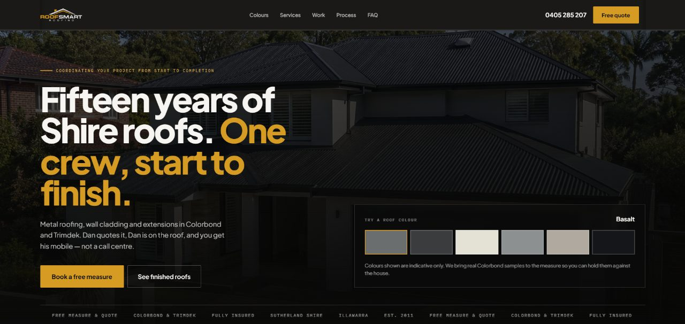

Roofing website design in Canberra: frosts, hail and a city of suburbs
Canberra is built around districts, the winters are cold and the hail can be severe. A roofing website that reflects those three facts is a sensible place to start.

Canberra roofing websites work best when they follow the city's districts, from Belconnen to Tuggeranong, with a page for each district you cover. Add pages for frost damage and hail, and make your ACT licence and insurance easy to find, because many Canberra homeowners check credentials before they hire.
Canberra is unusual among Australian cities. It was planned around districts, each with its own town centre, and many residents identify strongly with them. Someone in Tuggeranong does not think of themselves as living near Gungahlin. For a roofer, that structure is useful, because it gives your website a natural way to organise service areas.
01How should a Canberra roofing site handle locations?
Instead of a single page listing every suburb, build a page for each district you work in and fill it with real jobs:
- Belconnen: Bruce, Kaleen, Macquarie, Holt.
- Gungahlin: Ngunnawal, Amaroo, Forde, Casey. Mostly newer homes.
- Inner North and Inner South: Ainslie, Braddon, Turner, Griffith, Kingston, Red Hill. Older homes and some heritage areas.
- Woden and Weston Creek: Curtin, Hughes, Waramanga, Holder.
- Tuggeranong: Kambah, Wanniassa, Gordon, Calwell.
- Queanbeyan and Jerrabomberra across the border, if you work in NSW too.
Canberra homeowners will recognise their own district at a glance, and a photo from a job in their area builds trust more quickly than a claim on the homepage.
02What do Canberra winters do to roofs?
Canberra has some of the coldest winters of any Australian capital, with regular frosts. Repeated freezing and thawing can work on cracked tiles, worn mortar and gaps around flashings, and small faults become leaks. Many homes in the older suburbs have concrete or terracotta tile roofs that are decades old.
This gives you a clear set of pages to write: roof inspections before winter, ridge cap re-bedding and pointing, and tile replacement. Write them in plain language, the way a homeowner would describe the problem, and include photos of the faults you find.
03When hail hits
Canberra's hailstorms can be severe. The January 2020 hailstorm damaged tens of thousands of cars and a lot of homes. After an event like that, roofers can be booked for months.
A hail damage page should cover what you check, what homeowners should photograph for their insurer, and how you prioritise jobs when demand is high. If you have a waiting list, say so and explain how to get on it. People are more patient when they know what to expect.
Hail work also brings out the door-knockers. After a big storm, unfamiliar crews sometimes canvass streets offering quick repairs. A line on your site explaining how to check a roofer's licence before signing anything helps homeowners, and it sets you apart from the people they should be wary of.
04Credentials matter here
Many Canberra residents work in public service or the professions, and some research carefully before hiring a tradesperson. They read reviews, check licences and look for signs that a business is established. Make those easy to find:
- Your ACT licence details, and NSW details if you work across the border.
- Insurance information.
- Recent reviews in text form, with the district or suburb if the customer is happy to share it.
- A short about page with a real photo of you and the team.

05Common gaps on Canberra roofing sites
- Suburb lists with no structure. Districts are how locals think about the city.
- No mention of winter or frost-related work, which is a big share of the year.
- Thin or missing about pages, which matter to careful researchers.
- Hail pages that only exist as a line on the services list.
06Common questions
Should I create a page for every Canberra suburb?
No. A page for each district you cover, with real local jobs, is easier to maintain and more convincing to both homeowners and Google. One page per district also keeps the site short enough to update yourself.
Do I need separate pages for Canberra and Queanbeyan?
If you do a fair amount of work in Queanbeyan, a separate page helps, partly because licensing and council details differ across the border. Put your NSW details on that page so a homeowner in Queanbeyan sees them without searching.
When should Canberra homeowners book a roof inspection?
Late summer or autumn, before the first hard frosts. Small cracks and loose ridge caps are cheaper to fix before winter turns them into leaks, and a page saying so gives people a reason to book.
What should an about page say?
Who you are, how long you have been roofing, your licence and insurance details and a real photo of the team. Customers often read these pages closely before they call.
How do I handle a waiting list after hail?
Say on the hail page that you have one, roughly how long it is and how to join it. Ask for photos so you can deal with the worst roofs first.
If you run a roofing business in Canberra and want a site that matches how locals search, send a short brief. The Melbourne guide covers another cold-weather city with very different housing.